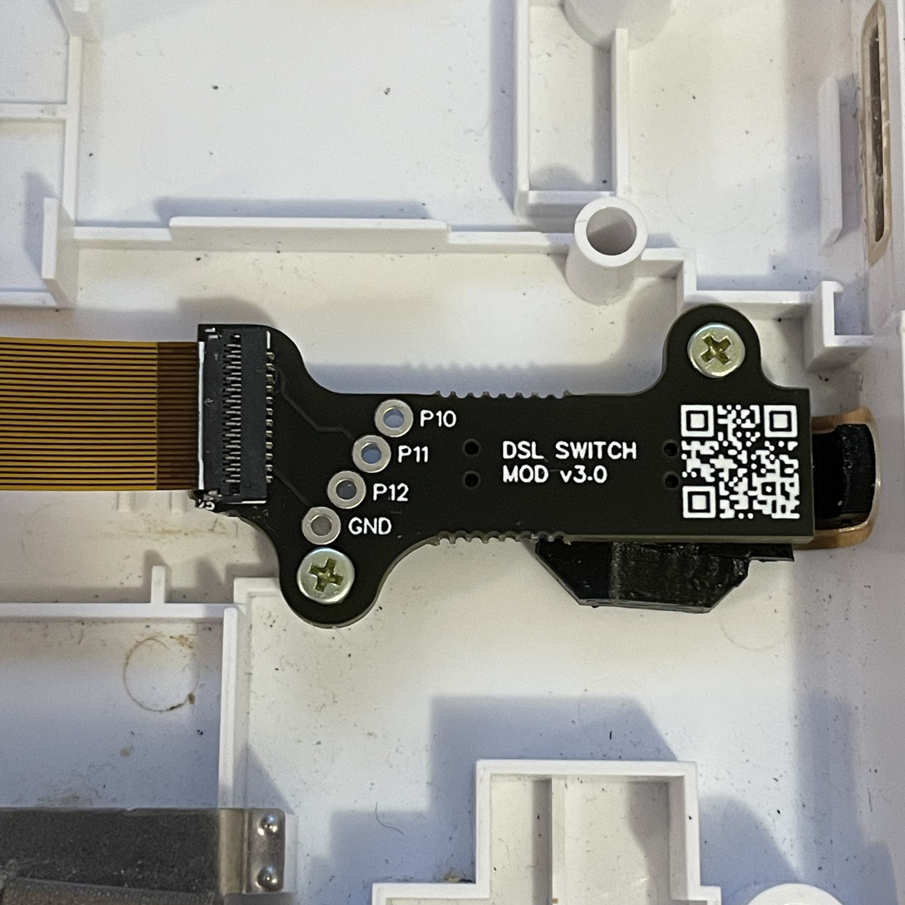
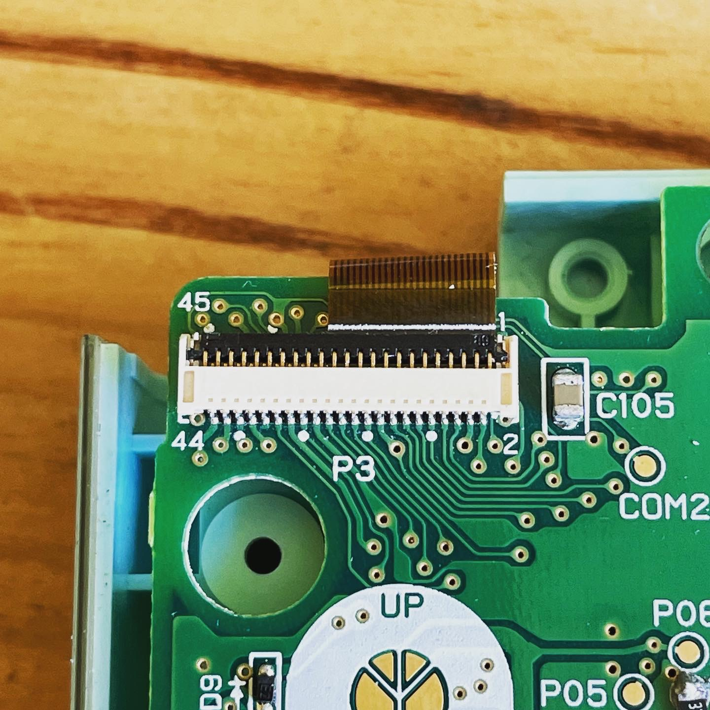
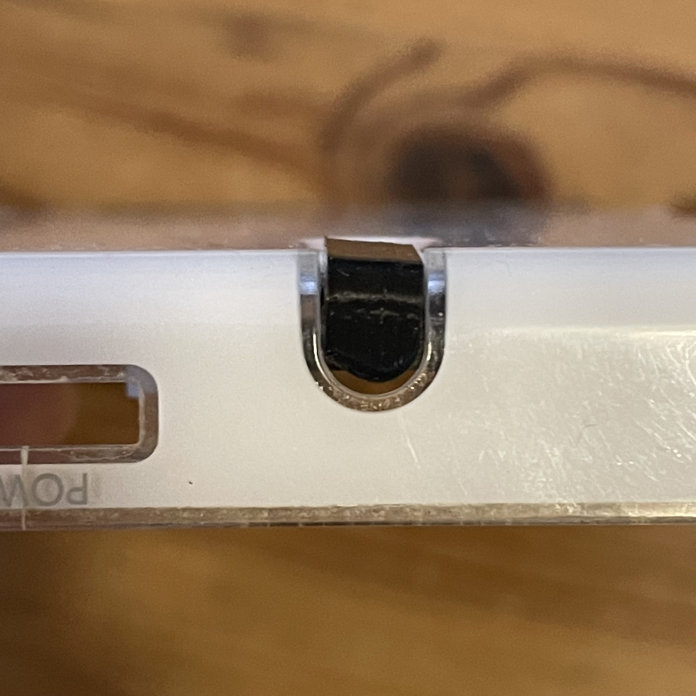
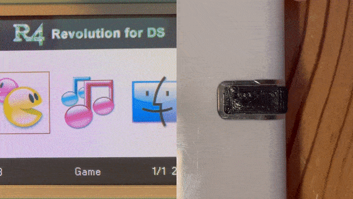

Switch Mod Kit – v3.0



Add screen switching capability to your DS Lite / GB Macro without the need for a customized enclosure. This breakout board was engineered to make direct use of the existing stylus holder mounting points, integrating an elegant 3D printed button cap into the stylus hole location.
This configuration enables the seamless activation of three tactile micro-switches, each serving independent hardware functions:
- Screen switching
- Picture mode selection
- Opacity control

The Kit Included:
- v3.0 breakout board
- 3D Printed button cap
- BIOS/WIFI chip flashed with custom TV out firmware
- Custom flex cable
Installation Notes
This kit requires a Game Boy Macro hardware mod to work properly, meaning soldering a 330r resistor directly across LEDA2 and LEDC2. Solderless installation using the included custom flex cable requires that you have not removed the native top screen connector from your main logic board. For standard soldered installations, please check out the test point mapping inside the repository.